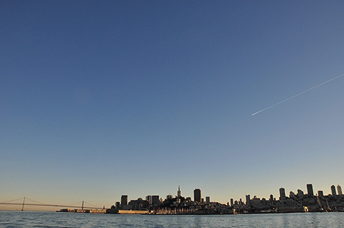

POPOS are privately owned public open spaces. They're spread all throughout the city and help make SF beatiful for everyone.
The best way to discover SF's POPOS is to to get off your butt and explore them for yourself.
POPOS provide a great value to workers, residents and visitors of the Downtown.